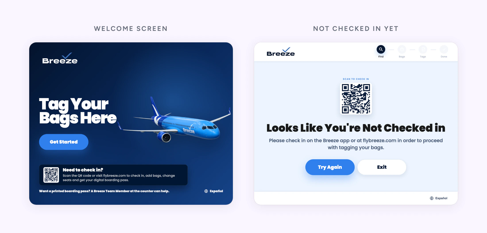
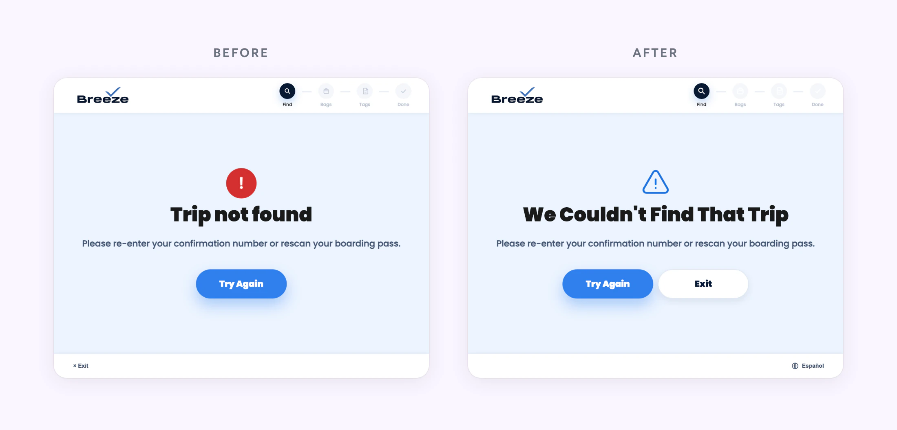

Room at the Kiosks, a Line at the Counter
Breeze's first airport kiosk, built for the crowded lobby
Executive Summary
In July 2026 Breeze went live on shared airport kiosks for the first time, in Las Vegas. Charleston followed in August. The goal is the crowded lobby: at peak, the line moves only as fast as agents can take bags.
Guests loved it. I wanted to know where the time actually went, so I took a stopwatch to the lobby. Then I redesigned the screens that sent guests back to the counter: check-in, the errors, and the scan step.
The day after those changes shipped, I went back. Most of the kiosks were free while the counter was busy, which points to the next opportunity: helping guests find them.
Role:
Product Designer, Field Researcher
Duration:
July to September 2026
Responsibilities:
Field research, UX/UI, bilingual copy, live CMS changes
The Setup
Built for the Busy Hours
At peak, agents are the fixed resource. The lobby clears as fast as they can take bags, so the kiosk's job is to give agents some of that time back.
It runs on somebody else's machine. Common-use kiosks belong to the airport, a vendor runs the software, and we edit our screens through their CMS. There's no release cycle, so a change reaches guests the same day. So does a mistake.
Version one did one thing: print bag tags for guests who had already checked in.

Going to the Airport
Where the Time Went
Three days after launch, a guest at the kiosk told us:
I love these, this saved so much time.
I wanted to see it on the clock. I spent a day in the Las Vegas lobby with a stopwatch and timed 45 transactions, some at the counter only, some at the kiosk and then the counter.
| Measure | Counter only | With the kiosk |
|---|---|---|
| Agent's time | 1:49 | 1:08 |
| Guest's whole journey | 1:49 | 1:52 |
The agent's part got shorter. The guest's whole trip took about the same time. A kiosk guest prints a tag and then still lines up for an agent to take the bag. Of the ten steps in a counter transaction, the kiosk handles one: printing the tag.
One Line Became Three
Before the kiosk there was one line. Now there were three: the counter, the kiosk, and bag drop, which grew at peak. A guest who got stuck at the kiosk ended up in the counter line anyway. The most common reason was that they hadn't checked in yet, and version one couldn't help with that.
What We Learned
| Measure | What We Saw | Why It Matters |
|---|---|---|
| The agent's part | Shorter, by up to 0:42 | An upper bound. Kiosk guests had already checked in and likely paid for bags, so not all of the gap is the kiosk |
| The guest's whole trip | About the same | 1:52 against 1:49 for a guest who got through the kiosk |
| How guests felt | They liked it | Self-service feels faster than waiting in line. That's real, and it's a different thing from saving time |
What I Changed
Each change targets a reason guests ended up back at the counter. The first round went live in Las Vegas on August 4.
Check In From Your Phone
The biggest snag was guests who hadn't checked in. Product and I looked at building check-in into the kiosk and went with something smaller: a QR code that opens check-in on their phone. Check-in comes off the agent's plate, and we didn't have to build it into the kiosk. If guests use it, we may never need to.

Errors That Tell You What to Do Next
I mapped every error the kiosk could fire and narrowed it to the 16 a guest can actually reach. Each one got a redesign and copy that names the next step. A language pass fixed 54 Spanish strings: machine translation slips, formal and informal mixed together, and text that was never translated.

Show People Where the Scanner Is
Scanning is where guests got stuck. The old animation showed a scanner the Las Vegas kiosk doesn't have. People did what it said, nothing happened, and some headed to the counter instead.
I redrew it from the real kiosk, where the scanner is tucked under the screen. Then Charleston launched on different hardware, a flat bed you look straight down on. I'd recommended one animation for both. Side by side, that would have taught half our guests the wrong move, so I reversed myself and drew Charleston its own.
 Hold your phone face up under the red light.
Hold your phone face up under the red light.
 Place your phone or paper pass face down on the scanner. It may take a second or two.
Place your phone or paper pass face down on the scanner. It may take a second or two.

Each airport's animation is now just an image we upload, so the next kiosk model gets its own.
Back on the Floor
The Day After
On August 5, the day after the first changes shipped, I went back with two more observers. We tracked 51 full journeys.
Scan got easier. Confusion at that step dropped, and nobody pressed a phone flat against the screen anymore. That's observed, not timed.
6 parties
waiting at the counter
3 of 8
kiosks in use. None ever had a line.
The Next Opportunity Is the Room
The kiosks had room to spare. The counter was where people waited. Guests told us why.
Thought kiosks were for something else.
Three of the 15 guests we talked to hadn't seen the kiosks or weren't sure what they were for. An observer also saw agents reprinting some kiosk tags. That's worth a closer look, since printing the tag is the step the kiosk takes off their plate.
The lobby held up: 50 of 51 journeys finished inside the 15-minute target. So we have room to work with.
Where It Stands
- Live on 8 units in Las Vegas since July 21. Charleston followed in August with its own scan art
- The next opportunity is routing: helping guests see the kiosks and know what they're for
- Las Vegas is close to a best case for counter layout, so the next city will have less room than these numbers suggest
The number that decides how far this grows is agent minutes per guest.